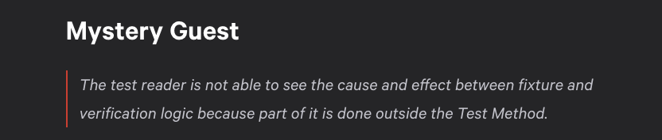

<!DOCTYPE html>
<html lang="en">
  <head>
    <meta charset="utf-8" />
    <meta name="viewport" content="width=device-width, initial-scale=1.0, maximum-scale=1.0, user-scalable=no" />

    <title></title>
    <link rel="stylesheet" href="dist/reveal.css" />
    <link rel="stylesheet" href="dist/theme/white.css" id="theme" />
    <link rel="stylesheet" href="plugin/highlight/monokai.css" />
	<link rel="stylesheet" href="css/layout.css" />
	<link rel="stylesheet" href="plugin/customcontrols/style.css">


    <script defer src="dist/fontawesome/all.min.js"></script>

	<script type="text/javascript">
		var forgetPop = true;
		function onPopState(event) {
			if(forgetPop){
				forgetPop = false;
			} else {
				parent.postMessage(event.target.location.href, "app://obsidian.md");
			}
        }
		window.onpopstate = onPopState;
		window.onmessage = event => {
			if(event.data == "reload"){
				window.document.location.reload();
			}
			forgetPop = true;
		}

		function fitElements(){
			const itemsToFit = document.getElementsByClassName('fitText');
			for (const item in itemsToFit) {
				if (Object.hasOwnProperty.call(itemsToFit, item)) {
					var element = itemsToFit[item];
					fitElement(element,1, 1000);
					element.classList.remove('fitText');
				}
			}
		}

		function fitElement(element, start, end){

			let size = (end + start) / 2;
			element.style.fontSize = `${size}px`;

			if(Math.abs(start - end) < 1){
				while(element.scrollHeight > element.offsetHeight){
					size--;
					element.style.fontSize = `${size}px`;
				}
				return;
			}

			if(element.scrollHeight > element.offsetHeight){
				fitElement(element, start, size);
			} else {
				fitElement(element, size, end);
			}		
		}


		document.onreadystatechange = () => {
			fitElements();
			if (document.readyState === 'complete') {
				if (window.location.href.indexOf("?export") != -1){
					parent.postMessage(event.target.location.href, "app://obsidian.md");
				}
				if (window.location.href.indexOf("print-pdf") != -1){
					let stateCheck = setInterval(() => {
						clearInterval(stateCheck);
						window.print();
					}, 250);
				}
			}
	};


        </script>
  </head>
  <body>
    <div class="reveal">
      <div class="slides"><section ><section data-markdown><script type="text/template"><!-- .slide: class="drop" data-background-image="images/v.jpg" -->


<div class="reset-margin" style="position: absolute; left: 0px; top: 419.5px; height: 0px; min-height: 0px; width: 1389px; display: flex; flex-direction: column; align-items: center; justify-content: space-evenly" >

### `Mystery Guest`
###### `anty-pattern`
</div>

<div class="reset-margin" style="position: absolute; left: 0px; top: 755.1px; height: 83.9px; min-height: 83.9px; width: 694.5px; display: flex; flex-direction: column; align-items: center; justify-content: space-evenly" >

*Alexander Repnikov*
</div>

</script></section><section data-markdown><script type="text/template"><!-- .slide: data-background-image="images/v.jpg" -->


### Purpose of tests

* To be an invariant <!-- .element: class="fragment" data-fragment-index="1" -->
	* Refactor: you should not have to change your tests
	* New feature: you should not have to change unrelated tests
* Tests as Documentation <!-- .element: class="fragment" data-fragment-index="2" -->
	* Tests grow and change with our implementation
	* Tests could show what part of your system are related

</script></section><section data-markdown><script type="text/template"><!-- .slide: data-background-image="images/v.jpg" -->


### Tests as Documentation

- it should be easy to understand the test scenario<!-- .element: class="fragment" data-fragment-index="1" -->
	- what it requires to work<!-- .element: class="fragment" data-fragment-index="2" -->
	- what it is related to<!-- .element: class="fragment" data-fragment-index="3" -->

### `and when it is not obvious`<!-- .element: class="fragment" data-fragment-index="4" -->

<p style="line-height: 0" class="reset-paragraph image-paragraph"></img></p>


</script></section><section data-markdown><script type="text/template"><!-- .slide: data-background-image="images/v.jpg" -->


### `"Outside the Test Method"`

- Different file<!-- .element: class="fragment" data-fragment-index="1" -->
	- FactoryBot uses default values<!-- .element: class="fragment" data-fragment-index="1" -->
	- and you are testing relaying on them<!-- .element: class="fragment" data-fragment-index="1" -->
- Same file, but distance between data and test is far<!-- .element: class="fragment" data-fragment-index="2" -->
	- RSpec nested contexts<!-- .element: class="fragment" data-fragment-index="2" -->


<aside class="notes"><ol>
<li>let&#39;s look on simple examples and discuss</li>
</ol>
</aside></script></section><section data-markdown><script type="text/template"><!-- .slide: data-background-image="images/v.jpg" -->


### `Examples (Different files case)`

``` Ruby
RSpec.describe User do
  context '#full_name' do
    let(:user) { build(:user) }

    it 'joins first and last names' do
      expect(user.full_name).to eq("#{user.first_name} #{user.last_name}")
    end
  end
end
```

`Issue: it copies the implementation`<!-- .element: class="fragment" data-fragment-index="1" -->

</script></section><section data-markdown><script type="text/template"><!-- .slide: data-background-image="images/v.jpg" -->


### `Examples (TDD like)`

##### `Rule of thumb: Have specific tests and general solution`


``` Ruby
RSpec.describe User do
  context '#full_name' do
    let(:user) { build(:user) }

    it 'joins first and last names' do
      expect(user.full_name).to eq("John Doe")
    end
  end
end
```
<!-- .element: class="fragment" data-fragment-index="1" -->
##### `Issue: why these data?? (Mystery Guest)`<!-- .element: class="fragment" data-fragment-index="2" -->

</script></section><section data-markdown><script type="text/template"><!-- .slide: data-background-image="images/v.jpg" -->


### `Examples (direct data)` 
##### `Put important data inside test scenario`

``` Ruby
RSpec.describe User do
  context '#full_name' do
    let(:user) { build(:user, first_name: 'John', last_name: 'Doe') }

    it 'joins first and last names' do
      expect(user.full_name).to eq("John Doe")
    end
  end
end
```
<!-- .element: class="fragment" data-fragment-index="1" -->
##### `Better: Now it is clear. You see a relations`<!-- .element: class="fragment" data-fragment-index="2" -->

</script></section><section data-markdown><script type="text/template"><!-- .slide: data-background-image="images/v.jpg" -->


### `Examples (wrong-ish improvement)` 
##### `You might want put these data in variables`

``` Ruby
RSpec.describe User do
  context '#full_name' do
    let(:name) { 'John' }
    let(:surname) { 'Doe' }
    let(:user) { build(:user, first_name: name, last_name: surname) }

    it 'joins first and last names' do
      expect(user.full_name).to eq("#{name} #{surname}")
    end
  end
end
```
<!-- .element: class="fragment" data-fragment-index="1" -->
##### `Issue: confusing variable names`<!-- .element: class="fragment" data-fragment-index="2" -->


<aside class="notes"><ol>
<li>tell example with car engine parts:<ol>
<li>if you name same parts in different way it might be difficult to person, who is not fluent in topic to follow example</li>
</ol>
</li>
</ol>
</aside></script></section><section data-markdown><script type="text/template"><!-- .slide: data-background-image="images/v.jpg" -->


### `Examples (Correct)` 
##### `keep eye on varible names`

``` Ruby
RSpec.describe User do
  context '#full_name' do
    let(:first_name) { 'John' }
    let(:last_name) { 'Doe' }
    let(:user) { build(:user, first_name: first_name, last_name: last_name) }

    it 'joins first and last names' do
      expect(user.full_name).to eq("#{first_name} #{last_name}")
    end
  end
end
```

##### `Remark: use aliases to improve readability`<!-- .element: class="fragment" data-fragment-index="1" -->

</script></section><section data-markdown><script type="text/template"><!-- .slide: data-background-image="images/v.jpg" -->


### `Test as Documentation`

``` Ruby
  let(:first_name) { 'John' }; let(:last_name) { 'Doe' }
  let(:email) { 'j.doe@somewhere.space' }
  let(:user) { build(:user, first_name:, last_name:, email:) }
  
  context '#full_name' do
    it 'joins first and last names' do
      expect(user.full_name).to eq("#{first_name} #{last_name}")
    end
  end
  context '#full_email' do
    it 'styles first and last name with email' do
      expect(user.full_email).to eq("#{first_name} #{last_name} <#{email}>")
    end
  end
```

##### `It's short file, but what if a lot of nesting?`<!-- .element: class="fragment" data-fragment-index="1" -->


<aside class="notes"><p>it might be difficult to follow a test and figure out what exactly are testing values.</p>
</aside></script></section><section data-markdown><script type="text/template"><!-- .slide: data-background-image="images/v.jpg" -->


### `Test as Documentation`

``` Ruby
  context '#full_name' do
    let(:first_name) ...; let(:last_name) ...; let(:user) ...
    it 'joins first and last names' do
      expect(user.full_name).to eq("#{first_name} #{last_name}")
    end
  end
  context '#full_email' do
    let(:first_name) { 'John' }; let(:last_name) { 'Doe' }
    let(:email) { 'j.doe@somewhere.space' }
    let(:user) { build(:user, first_name:, last_name:, email:) }
    it 'styles first and last name with email' do
      expect(user.full_email).to eq("#{first_name} #{last_name} <#{email}>")
    end
  end
```

##### `You can see which data are important for certain methods`<!-- .element: class="fragment" data-fragment-index="1" -->


<aside class="notes"><ul>
<li><p>Emphasized relations</p>
</li>
<li><p>tell: with growth of our project we might need add more tests and these values on top will not be complaint. In such case will will have to make changes in unrelated tests, which are a sign that our tests was not that good, since it complicates maintaining.</p>
</li>
</ul>
</aside></script></section><section data-markdown><script type="text/template"><!-- .slide: data-background-image="images/v.jpg" -->


#### `Takeovers`

### if something is important for your test scenario
### write it directly and place it close
### it'll make it easier for others to understand


<aside class="notes"><p>do not affraid to add redundant lines. If these lines help you or other person to understand test faster then they was not redundant</p>
</aside></script></section><section data-markdown><script type="text/template"><!-- .slide: class="drop" data-background-image="images/v.jpg" -->


<div class="reset-margin" style="position: absolute; left: 83.34px; top: 251.70000000000002px; height: 83.9px; min-height: 83.9px; width: 833.4000000000001px; display: flex; flex-direction: column; align-items: center; justify-content: space-evenly" >


# Thank you<!-- .element: class="fragment" data-fragment-index="1" -->
</div>

<div class="reset-margin" style="position: absolute; left: 694.5px; top: 83.9px; height: 419.5px; min-height: 419.5px; width: 694.5px; display: flex; flex-direction: column; align-items: center; justify-content: space-evenly" >


TODO
#### `Presentation`
#### `is here`
</div>


</script></section></section></div>
    </div>

    <script src="dist/reveal.js"></script>

    <script src="plugin/markdown/markdown.js"></script>
    <script src="plugin/highlight/highlight.js"></script>
    <script src="plugin/zoom/zoom.js"></script>
    <script src="plugin/notes/notes.js"></script>
    <script src="plugin/math/math.js"></script>
	<script src="plugin/mermaid/mermaid.js"></script>
	<script src="plugin/chart/chart.min.js"></script>
	<script src="plugin/chart/plugin.js"></script>
	<script src="plugin/customcontrols/plugin.js"></script>

    <script>
      function extend() {
        var target = {};
        for (var i = 0; i < arguments.length; i++) {
          var source = arguments[i];
          for (var key in source) {
            if (source.hasOwnProperty(key)) {
              target[key] = source[key];
            }
          }
        }
        return target;
      }

	  function isLight(color) {
		let hex = color.replace('#', '');

		// convert #fff => #ffffff
		if(hex.length == 3){
			hex = `${hex[0]}${hex[0]}${hex[1]}${hex[1]}${hex[2]}${hex[2]}`;
		}

		const c_r = parseInt(hex.substr(0, 2), 16);
		const c_g = parseInt(hex.substr(2, 2), 16);
		const c_b = parseInt(hex.substr(4, 2), 16);
		const brightness = ((c_r * 299) + (c_g * 587) + (c_b * 114)) / 1000;
		return brightness > 155;
	}

	var bgColor = getComputedStyle(document.documentElement).getPropertyValue('--r-background-color').trim();

	if(isLight(bgColor)){
		document.body.classList.add('has-light-background');
	} else {
		document.body.classList.add('has-dark-background');
	}

      // default options to init reveal.js
      var defaultOptions = {
        controls: true,
        progress: true,
        history: true,
        center: true,
        transition: 'default', // none/fade/slide/convex/concave/zoom
        plugins: [
          RevealMarkdown,
          RevealHighlight,
          RevealZoom,
          RevealNotes,
          RevealMath.MathJax3,
		  RevealMermaid,
		  RevealChart,
		  RevealCustomControls,
        ],

		mathjax3: {
			mathjax: 'plugin/math/mathjax/tex-mml-chtml.js',
		},

		customcontrols: {
			controls: [
			]
		},
      };

      // options from URL query string
      var queryOptions = Reveal().getQueryHash() || {};

      var options = extend(defaultOptions, {"width":"1389","height":"839","margin":"0","controls":true,"progress":true,"slideNumber":true,"transition":"fade","transitionSpeed":"default"}, queryOptions);
    </script>

    <script>
      Reveal.initialize(options);
    </script>
  </body>
</html>
